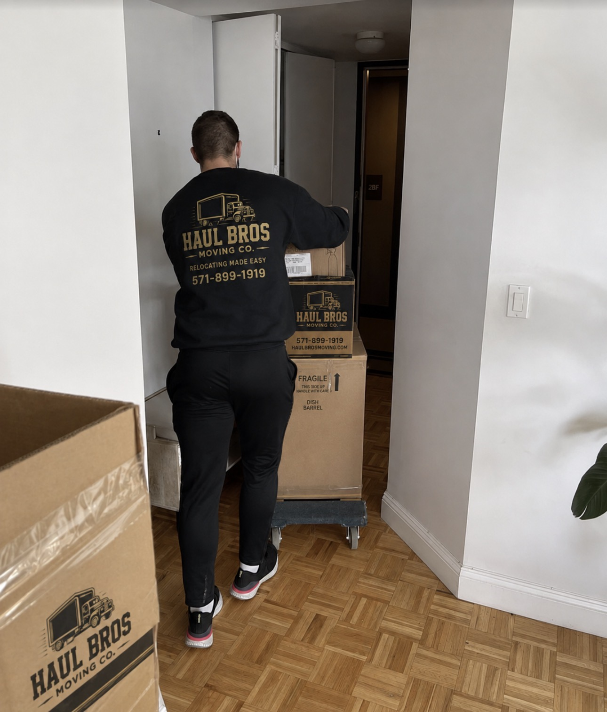

Quick answer: What is the average cost of movers in Woodbridge, VA?
For 2026, local full-service moves in Woodbridge generally cost approximately $450–$3,800, depending on home size, inventory, crew size, and moving time. Third-party market estimates are a starting point, not a guaranteed quote.
Haul Bros Moving Co LLC publishes local packages starting at $395 for two movers and a truck for the first two hours, then $159 per additional hour. Final pricing is confirmed in a written estimate.
Average moving costs in Woodbridge by home size
| Home size | Estimated moving cost |
|---|---|
| Studio apartment | $448 |
| 1-bedroom apartment | $609 |
| 2-bedroom home | $963 |
| 3-bedroom home | $2,178 |
| 4-bedroom home | $2,492 |
| 5+ bedroom home | $3,815 |
These figures are third-party estimates, not official citywide averages. Inventory, distance, access, stairs, elevators, and requested services can change the final price.
How much does Haul Bros Moving Co LLC charge?
Our local moving rates are based on crew size and the time needed to complete the job.
Small moves
$395
2 movers + truck, first 2 hours
$159 per additional hour
Medium moves
$495
3 movers + truck, first 2 hours
$189 per additional hour
Large moves
$695
4 movers + truck, first 2 hours
$249 per additional hour
Packages have a two-hour minimum. Quoted rates include the truck, fuel, standard equipment, moving blankets, shrink wrap, dollies, floor protection, loading, unloading, and eligible basic furniture disassembly and reassembly. Ordinary stairs and elevators do not receive separate access fees under quoted local service terms.
How much will your actual move cost?
Illustrative examples help with planning, but they are not invoices or guaranteed completion times.
- One-bedroom apartment: two movers for four hours equals $395 + (2 × $159) = $713 before applicable discounts.
- Two-bedroom apartment: three movers for five hours equals $495 + (3 × $189) = $1,062.
- Larger household: four movers for six hours equals $695 + (4 × $249) = $1,691.
Provide both addresses, a complete inventory, and access details for an accurate written estimate.
What factors affect moving costs in Woodbridge?
Woodbridge moves can involve apartments near Potomac Mills, townhomes in Dale City, homes in Lake Ridge, and longer carries or limited parking in established neighborhoods. Main cost factors include furniture volume, distance, stairs and elevators, packing, parking, walking distance, specialty items, and moving date. Driving time between addresses counts toward billable moving time under the agreed local service terms.
Reserve elevators and legal truck parking early, pack and label boxes before arrival when possible, and disclose oversized furniture, appliances, and items requiring disassembly.
Is hiring movers cheaper than moving yourself?
A DIY move may include truck rental, fuel, mileage, supplies, equipment, and your own labor. Professional moving combines transportation and labor into a quoted service. Compare the total cost, time, risk, and access difficulty instead of comparing truck rental alone.
How can you save money on your Woodbridge move?
- Declutter and donate items before moving day.
- Pack and label boxes in advance.
- Move midweek or mid-month when your schedule allows.
- Reserve an elevator and secure legal truck parking.
- Provide an accurate inventory and ask about eligible military, senior, and student discounts.
How do you choose a reliable moving company in Woodbridge?
Request a written estimate, confirm what is included, ask when billable time begins and ends, review deposit and cancellation terms, and understand valuation or liability protection. Verify the company’s applicable operating authority for your move and compare written estimates from multiple providers. For interstate moves, review federal consumer guidance at FMCSA Protect Your Move.
Why consider Haul Bros Moving Co LLC for your Woodbridge move?
Haul Bros serves Woodbridge and surrounding Northern Virginia communities with residential moving, labor-only assistance, packing, storage, and related relocation services. Visit the Woodbridge moving page, explore local moving services, or request a free estimate.
Frequently Asked Questions About Moving Costs in Woodbridge, VA
How much do movers charge per hour in Woodbridge, VA?
Haul Bros charges $395 for the first two hours with two movers and a truck, followed by $159 per additional hour. Three- and four-mover packages are also available.
How much does it cost to move a one-bedroom apartment in Woodbridge?
A four-hour move using two movers and a truck would be $713 before applicable discounts. Actual cost depends on inventory, access, and moving time.
How much does it cost to move a two-bedroom apartment in Woodbridge?
A five-hour move with three movers and a truck would be $1,062 before applicable discounts. Your written estimate confirms the actual scope.
Do moving companies charge extra for stairs?
Some companies add separate access fees. Haul Bros does not charge a separate standard stair fee under its quoted local terms, although stairs can increase the time required.
Is a moving truck included in the price?
Yes. The moving truck, fuel, and standard moving equipment are included in quoted full-service local moving rates.
How much does it cost to hire movers for three hours?
Three hours is $554 for two movers, $684 for three movers, or $944 for four movers before applicable discounts.
Is there a minimum number of hours for movers?
Haul Bros has a two-hour minimum for standard moving packages.
How much is the deposit for Haul Bros Moving Co LLC?
A $100 reservation deposit secures the move date and is applied toward the final moving balance. Confirm cancellation and refund terms before paying.
Do movers charge for driving time?
Moving time begins when the crew arrives and ends after unloading is completed, so travel between pickup and delivery counts toward billable moving time under the agreed service terms.
How do I get an accurate moving quote in Woodbridge?
Provide pickup and delivery addresses, your preferred date, inventory, bedrooms, stairs, elevators, parking, and special services. Request a written estimate explaining crew size, rate, minimum hours, and included services.
Plan Your Woodbridge Move
For a personalized estimate, call 571-899-1919 or complete the quote form. Haul Bros Moving Co LLC is here to make relocating easy.